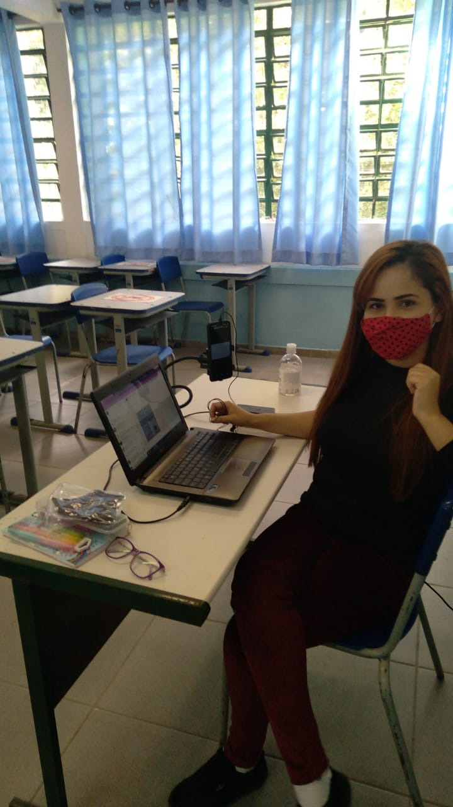
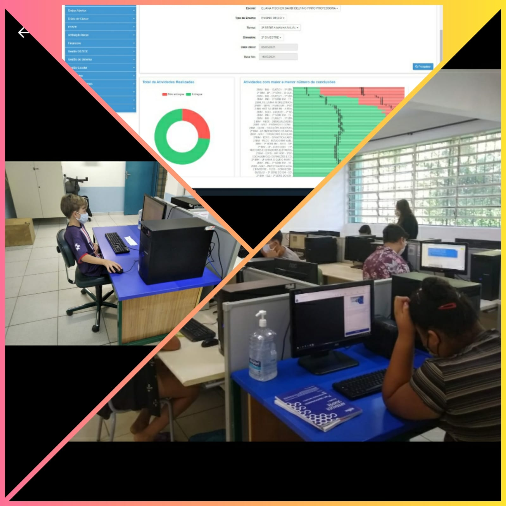

E.E. Eliana Fischer Bambi Delfino Pinto Profª
Gestão à Vista

Anos Finais e Ensino Médio
Ação: Intensificar o desenvolvimento das habilidades socioemocionais para desconstruir o pensamento negativo quanto ao ensino e a aprendizagem de matemática nos Anos Finais/ Ensino Médio.
Etapa: Socializando o progresso dos alunos em reuniões de ATPC e Conselho de Classe com todos os professores.

Anos Finais e Ensino Médio
Ação: Aprimorar o acompanhamento e o monitoramento das estratégias de ensino e de aprendizagem do ensino remoto com foco em matemática no Ensino Fundamental/ Ensino médio.
Etapa: Acompanhando e reavaliando o ensino remoto, periodicamente, através das mídias utilizadas, especialmente no CMSP, para alinhar as estratégias utilizadas.
Professora Maria Fernanda

Professora Laurie Anne com participação da aluna Larah Ribeiro do 7° Ano A

Professora Kati Daneluz com a participação da aluna Ana Julia do 7° Ano A
Etapa: Elaborando, quinzenalmente, roteiros que contemplem as habilidades essenciais de acordo com o currículo, com foco nos alunos que não tem acesso à internet.
Professora Daiana Nicodemos
Anos Finais e Ensino Médio
Ação: Desenvolver o letramento matemático com foco nos descritores do nível 3 da escala de proficiência de matemática no Ensino Fundamental/Ensino Médio.
Etapa: Realizando, bimestralmente uma autoavaliação com os estudantes para reconhecer os seus próprios avanços nos anos finais do Ensino Fundamental.

Etapa: Acompanhando as aulas com foco nos indicadores das metodologias utilizadas pelo docente no Ensino Fundamental/ Ensino Médio.
Professor Walter Ribeiro

Professora Idinéia Matos
Anos Finais e Ensino Médio
Acompanhando os alunos do Ensino Fundamental na realização das tarefas do CMSP.

Anos Finais e Ensino Médio
Identificando, através de entrevista com os alunos, quais habilidades socioemocionais interferem no processo do ensino e da aprendizagem de matemática dos anos finais e ensino médio.
Anos Finais e Ensino Médio
Socializando o progresso dos alunos em reuniões de ATPC e Conselho de Classe com todos os professores.
Anos Finais e Ensino Médio
Orientando os professores quanto ao uso da plataforma do CMSP.
Anos Finais e Ensino Médio
Realizando a devolutiva do acompanhamento pedagógico quanto ao uso de tecnologias e dos roteiros.